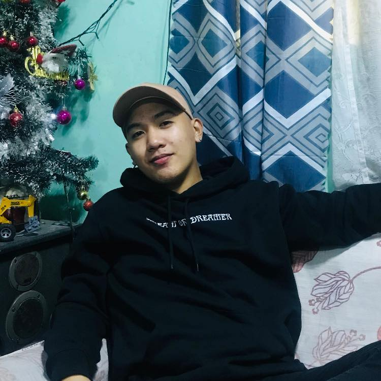

EDUCATION
2008 - 2014
Elementary
San Vicente Hulo Elementary School, located on Barangay SanVicente Halang, Santa Maria, Bulacan
2014 - 2018
High School Degree
Parada National High School, located on Barangay Parada, Santa Maria, Bulacan .
2018 - 2020
Senior-HighSchool Degree
I graduated from Immaculate Conception Polytechnic for my Senior High School, where I took the HRTCO strand under the Tech-Voc track, focusing on cooking, cleaning, and basic computer skills. The school is located on Marian Road, Poblacion, Santa Maria, Bulacan.
2020 - 2024
College Degree
I graduated with a Bachelor of Science degree in Information Systems from La Concepcion College, Inc., located on Kaypian Road, City of San Jose del Monte, Bulacan.
EXPERIENCE
2022 - 2023
IT Support / Intern
One of my experiences as an intern at GNW Computer Center involved enhancing my computer skills. I worked on editing designs for computer sales, learned how to troubleshoot, repair, and reformat computers, and also improved my communication skills in a sales context.
Feb 10, 2022 - Oct 18, 2022
Helper / Partime Job
During my third year in college, I had a part-time job as a helper at Shopee Delivery. My responsibilities included loading and unloading packages from trucks, contacting clients, handling paperwork, cleaning and maintaining the vehicle, communicating with dispatchers, and ensuring the security of parcels and packages.
Sep 5, 2018
Seminar on Pre-Employment
i attended seminar that focusing in valuable insights, resources, and strategies to improve their job search experience and secure meaningful employment opportunities.